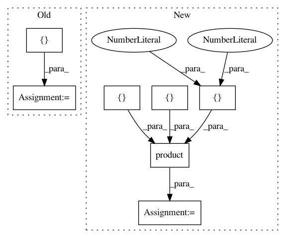

4744e062ffe801fe2c7c1faa2bda385f293d5b37,sklearn/ensemble/tests/test_gradient_boosting_loss_functions.py,,test_binomial_deviance,#,22
Before Change
def alt_dev(y, pred):
return np.mean(np.logaddexp(0.0, -2.0 * (2.0 * y - 1) * pred))
test_data = [(np.array([1.0, 1.0, 1.0]), np.array([100.0, 100.0, 100.0])),
(np.array([0.0, 0.0, 0.0]), np.array([100.0, 100.0, 100.0])),
(np.array([0.0, 0.0, 0.0]),
np.array([-100.0, -100.0, -100.0])),
(np.array([1.0, 1.0, 1.0]),
np.array([-100.0, -100.0, -100.0]))]
for datum in test_data:
assert_almost_equal(bd(*datum), alt_dev(*datum))
After Change
z = 2 * y - 1
return 2 * np.mean(np.log(1 + np.exp(-z * raw_pred)))
test_data = product(
(np.array([0., 0, 0]), np.array([1., 1, 1])),
(np.array([-5., -5, -5]), np.array([3., 3, 3])))
for datum in test_data:
assert bd(*datum) == approx(alt_dev(*datum))
In pattern: SUPERPATTERN
Frequency: 3
Non-data size: 7
Instances
Project Name: scikit-learn/scikit-learn
Commit Name: 4744e062ffe801fe2c7c1faa2bda385f293d5b37
Time: 2020-08-31
Author: lorentzen.ch@gmail.com
File Name: sklearn/ensemble/tests/test_gradient_boosting_loss_functions.py
Class Name:
Method Name: test_binomial_deviance
Project Name: EducationalTestingService/skll
Commit Name: 94f2c9d4bd78723440418b6ea914012d83b00bed
Time: 2019-10-18
Author: nmadnani@ets.org
File Name: tests/test_utilities.py
Class Name:
Method Name: test_generate_predictions
Project Name: janfreyberg/superintendent
Commit Name: 7b71f7f38020e790a69b792d81415399971a7591
Time: 2018-05-10
Author: jan.freyberg@gmail.com
File Name: tests/test_iteration.py
Class Name:
Method Name: